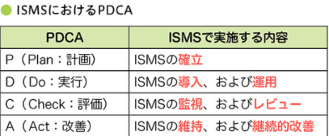
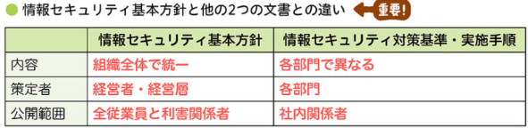

ITパス暗記ノート
15章
ソーシャルエンジニアリング
人間の心理的な隙や信頼を悪用してパスワードや個人情報などの機密情報を盗み取る攻撃手法
ショルダーハック：代表例は、秘密の情報を「肩越しに盗み見る」こと
マルウェア
悪意のあるソフトウェアの総称
ボット
多数のPCに感染して、攻撃者から指令を受けると、一斉攻撃などの動作を行うプログラム
スパイウェア
利用者に気づかれないように個人情報などを収集するプログラム
ランサムウェア
ファイルを使用不能にし、解除と引き換えに金銭を得るソフトウェア
バックドア
システムに意図的に設けられた秘密のアクセス経路
フィッシング
偽サイトに暗証番号やクレジットカード番号を入力させて、個人情報を盗み取ること
DoS攻撃
電子メールやWebリクエストなどを大量に送りつけて、ネットワーク上のサービスを提供不能にすること
クロスサイトスクリプティング
悪意のあるスクリプトを埋め込み、データを盗み出す攻撃
リスクマネジメント
企業の活動に伴って発生するあらゆるリスクを管理し、そのリスクによる損失を最小の費用で食い止めるためのプロセス
リスクマネジメントの4つのプロセスが出題される
リスク特定 → リスク分析 → リスク評価 → リスク対応
ISMS
(Information Security Management System)
情報セキュリティマネジメントシステムとは、ISO/IEC 27001に基づき組織の情報資産を「機密性・完全性・可用性」の3要素で保護するための管理体制（仕組み）

情報セキュリティポリシー
情報セキュリティに関するその組織の取り組み、対策をまとめた文書
情報セキュリティポリシーは、情報セキュリティ基本方針、情報セキュリティ対策基準、情報セキュリティ実施手順の3つの文書で構成される
情報セキュリティ基本方針と情報セキュリティ対策基準・実施手順の違いが出題される

情報セキュリティ基本方針
情報セキュリティに関する取り組みを示す文書
情報セキュリティ対策基準
基本方針で示した目標を達成するためのルール
情報セキュリティ実施手順
ルールを実施するための手順
機密性
認められた人だけが情報にアクセスできること
完全性
改ざんされていないデータ
可用性
必要なときにサービスを利用できること
共通鍵暗号方式
暗号化と復号の鍵が同じ。暗号化や復号が高速
公開鍵暗号方式
暗号化と復号の鍵が異なる。公開鍵暗号方式では、秘密鍵は第三者に知られてはいけない。
デジタル署名
秘密鍵で暗号化し、公開鍵で復号する。
デジタル署名を使うと、なりすましやデータの改ざんを検知できる
認証局
電子商取引において、公開鍵に対するデジタル証明書を発行する第三者機関である
ハッシュ関数
文字列を入力すると一定の長さの値を出力する関数
ダイジェスト
ハッシュ関数によって出力される値
認証局：CA
(Certification Authority)
電子商取引において、公開鍵に対するデジタル証明書を発行する第三者機関である
PKI
(Public Key Infrastructure)
公開鍵基盤。公開鍵の正当性を認証局に保証してもらう仕組み
ショルダーハックの防止策
のぞき見防止フィルムを貼る」こと
データを完全消去する
ランダムなデータで複数回の上書きをする。物理的に破壊する
ランサムウェアへの対策
データのバックアップが有効
ファイアウォール
外部ネットワークからの不正アクセスを防ぐために、内部ネットワークと外部ネットワークの間に置かれるもの
IDS
(Instracution Detection System)
侵入検知システム。外部から不正アクセスがあった際にシステム管理者に知らせる
IPS
(Instraction Prevention System)
侵入防止システム。不正アクセスがあった際、管理者に知らせると同時にアクセスを遮断する
WAF
(Web Application Firewall)
Webアプリケーションの脆弱性を狙った攻撃からシステムを守るための仕組み。対SQLインジェクション
DMZ
(DeMilitarized Zone)
非武装地帯。企業内ネットワークと外部ネットワークの両方から論理的に隔離されたネットワーク領域
SSL/TLS
（Secure Sockets Layer）
（Transport Layer Security）
パソコンとサーバ間の通信を暗号化する通信プロトコル。SSL/TLSを使った通信ではURLが「https://」ではじまる。HTTPSが暗号化する範囲はWebブラウザからWebサーバの間
WPA2
（Wi‑Fi Protected Access 2）
WEPより強固なセキュリティを提供する現在主流の方式。WPA2が暗号化する範囲はPCからアクセスポイントの間
VPN
（Virtual Private Network）
公衆回線をあたかも専用回線であるかのごとく利用できるようにするために使われる技術
ペネトレーションテスト
システムに対して、実際にシステムを攻撃することで、セキュリティ上の弱点を発見するテスト手法
ワンタイムパスワード
一度しか使えない使い捨てのパスワードを使うことで、不正アクセスを防止する仕組みである
シングルサインオン
一度の認証で、許可されている複数のサーバやアプリケーションなどを利用できる仕組みである
耐タンパ性
システムの内部データの解析のしにくさを表す度合い
セキュリティバイデザイン
システムの企画・設計段階からセキュリティを確保すること
セキュアブート
PCの起動時にOSのデジタル署名を検証することで、許可されていないOSの実行を防ぐ技術
リスクベース認証
リスクの高さに応じて、追加の認証を行う認証方式
ブロックチェーン
複数のコンピュータで取引履歴を共有・検証して正しい記録を鎖のようにつなぐ。暗号資産で使う。新しい鎖をつなぐ作業をマイニングという。
バイオメトリクス認証
指紋や虹彩、筆跡、キーストロークといった、身体的特徴や行動的特徴による認証である
・本人拒否率を低く設定すると、利便性が高まる
・他人受入率を低く設定すると、安全性が高まる
2要素認証
2つの要素を用いて本人確認をする認証方式である